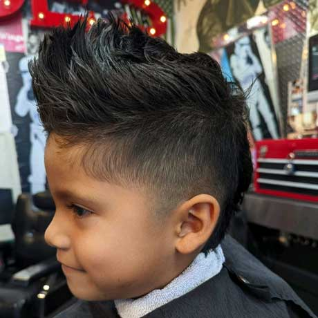

Alfredo Munoz
I am Alfredo Munoz currently, I am a first-year student at UCR. I am working towards a bachelor's in the school of business however, I have not determined if I want to do business administration or marketing. I want to do business because I know I have a very approachable persona and I have very strong communication skills. Business is very versatile and I will be guaranteed to find a job anywhere I go. I have not had any official work experience as of yet, but I am looking forward to applying for jobs over the summer. I have had some experience with having a small business because I have a couple skills that brought me an income at some point and time in my life. During COVID-19 I learned how to cut my own hair and once that was over I figured I should take what I learned and use it to my advantage to make profit. I learned to cut peoples hair and fade through youtube videos. I was luck enough to meet barbers who were kind enough to give me pointers and teach me. I started off by providing this service to people I know around me such as family and friends. Once in college I created a instagram page to promote my business and reach out to more people. Starting a business and getting clients is very hard but once you get a couple loyal clients it gets easier. I have had a couple of people promote my business for me. I have been able to have a somewhat successful business because my price range is extremely competitive since an average hair cut today cost around twenty five dollars, compared to my affordable price of fifteen dollars. This has been both a great help as well as a hindrance to my business because people come to me to get a hair cut expecting the same service as all other barber shops. However, I do not have enough practice cutting other people’s hair so I take around two hours or an hour in a half per person. This of course balances out the fact that my hair cuts are more affordable compared to other barbers. The quality of my hair cuts are great but I am nt yet time efficient, therefore I compensate that draw back with my low prices. I gain more experience and knowledge with every haircut I do. I have been able to pay off my barber equipment with the hair cuts I have done and I get new machines that help me attend my clients better. With every new machine I purchase I am able to add a new service that I can provide for my client. An example of this is when I give my clients a facial line up with the razor I bought. Before hand I was only able to cut peoples hair but not able to cut their facial hair in a professional manner. These experiences have taught me a lot about working as well as having your own business.
I am Alfredo Munoz currently, I am a first-year student at UCR. I am working towards a bachelor's in the school of business however, I have not determined if I want to do business administration or marketing. I want to do business because I know I have a very approachable persona and I have very strong communication skills. Business is very versatile and I will be guaranteed to find a job anywhere I go. I have not had any official work experience as of yet, but I am looking forward to applying for jobs over the summer. I have had some experience with having a small business because I have a couple of skills that brought me an income at some point and time in my life. I had a time when I was cleaning cars. I started off detailing cars for my dad since he sells cars on the side to make another income. My father owns a smog check shop and when he would buy cars to sell, he would give them to me to clean before he would sell them. This business was way more slow than being a barber because my dad would not buy cars every week. This was more of a once a month kind of job, so of course this was not very lucrative. I was able to get a few customers from my church but I was not gaining that many clients from that. This job gained more money with one client than I gain from cutting hair. Usually, I would get paid around fifty to sixty dollars per car and I take the same amount of time with one car and one person. This job was very draining for my body but getting paid afterward made it worth the while. I was detailing cars before I cut hair therefore I had no prior experience with promoting services nor did I have the mentality of a business owner. I say this because I felt bad to charge people for doing something for them. At the time I did not realize I was doing myself a disservice because I was not doing a favor for other, I was providing a legitimate service that deserves payment. I made sure to not make the same mistake with any other hobby or skill I chose to use as a source of income.
I'm Alfredo Munoz, a first-year student at UCR, and I currently attend. I'm pursuing a bachelor's degree in the business school, but I'm not sure if I want to major in business administration or marketing. I want to conduct business because I am aware of my strong communication abilities and approachable demeanor. I can always find a job because the business world is so flexible. Although I don't currently have any formal work experience, I am eager to start applying for jobs this summer. I have some experience running a small business because I possess a few abilities that have occasionally allowed me to earn money. I learned how to cut my own hair during COVID-19, and after that was over, I reasoned that I should use what I had learned to my advantage to earn money. I watched YouTube videos to learn how to fade and cut people's hair. I had the good fortune to run into barbers who were willing to teach and give me advice. I began by offering this service to locals I know, like my family and friends. When I was in college, I started an Instagram page to advertise my company and connect with more customers. It's difficult to start a business and find customers, but once you do, it gets easier. A few people have promoted me. Due to the fact that my price range is extremely competitive—an average hair cut today costs around $25, versus my reasonable price of $15—I have been able to run a somewhat successful business. Due to the fact that clients come to me expecting the same level of service as other barber shops, this has both helped and hurt my business. I take about two hours or an hour and a half per person, but I don't have enough experience cutting other people's hair. This, of course, counteracts the fact that my hair cuts are less expensive than those offered by other barbers. Despite the fact that my hair cuts are of excellent quality, I'm Alfredo Munoz, a first-year undergraduate student at UCR. I'm pursuing a bachelor's degree in business administration, but I'm not sure if I want to major in marketing or business administration. I'm interested in doing business because I know I have excellent communication skills and a friendly demeanor. The business world is so flexible that I can always find a job. I am eager to start applying for jobs this summer even though I do not yet have any formal work experience. Because I have a few skills that have occasionally allowed me to make money, I have some experience managing a small business.
Experience
Dog Groomer
• Bathed dogs
• Untangled hair with brush
• Trimmed and Styled dogs fur
• Clipped nails
Education
UC Riverside
University of California Riverside
University of California Riverside
Portfolio
